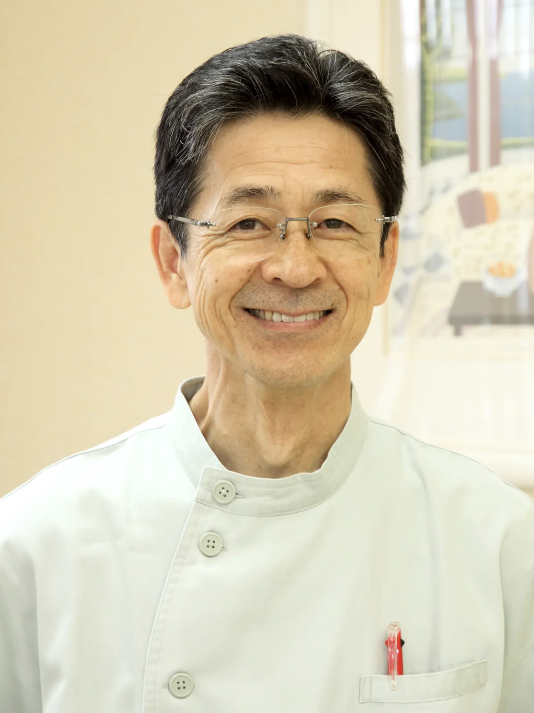

☰
医師紹介

向中野 浩（むかいなかの ゆたか）
資格
経歴
- 1957年11月16日北海道 初山別生まれ
- 1983年 北海道大学歯学部卒業
- 1985年 北海道大学歯周病学教室助手
その後、外来長、医局長を歴任
- 1995年 ミュー歯科勤務
- 1997年 マイデンタルクリニック開業
- 1983年より 北葉会サークルにて、
義歯および口腔外科の研修を行い現在に至る
受講研修・セミナー
- ブローネマルクインプラント研修（ニューヨーク コロンビア大学）
所属
治療のモットー
- 丁寧な治療をすること
- 正確な診断をすること
- 患者さまにとって最良の治療をすること
当院の3つの特徴
- 痛みと恐怖感を抑える工夫をしています
- 歯周病専門医による歯周病治療を行います
- 医師がご自宅に訪問し、診療することが可能です
診療時間
|
月 |
火 |
水 |
木 |
金 |
土 |
日 |
| 9:30-13:00 |
○ |
○ |
○ |
○ |
○ |
● |
× |
| 14:30-19:00 |
○ |
○ |
△ |
○ |
○ |
× |
× |
※ △：水曜は17:00まで
※ ●：第1・3・5土曜のみ
※ 休診日：第2・4土曜、日曜、祝祭日
アクセス
〒063-0832
北海道札幌市西区発寒12条5丁目3-10
地下鉄東西線「宮の沢駅」からバスにて５分